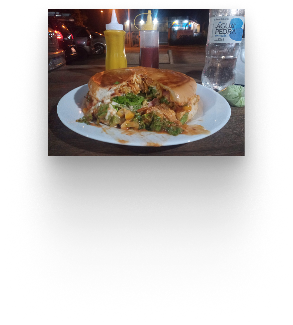
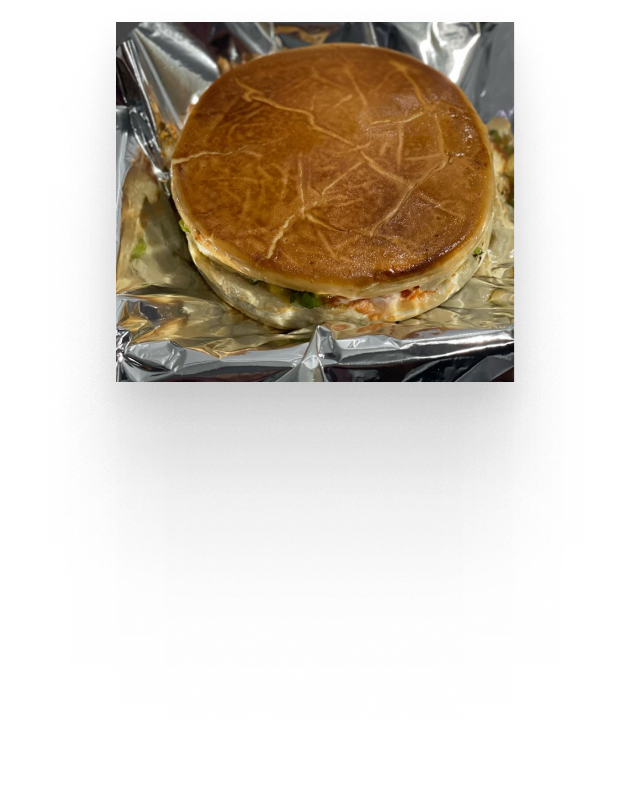
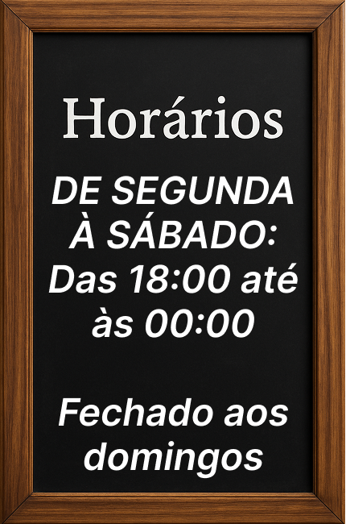

Sejam Bem-vindos
ao
Xis do gaúcho tchê
O MELHOR PRENSADO DA REGIÃO

O Verdadeiro Sabor do X-Gaúcho!
Se você é daqueles que não aceita lanche sem sustância, chegou ao lugar certo! Aqui no Xis do gaúcho tchê, a chapa não para e o sabor é coisa séria.
Cada X-Gaúcho que sai daqui é um monstro de sabor, com pão macio, carne suculenta, queijo derretendo e aquele tempero que só quem entende de lanche sabe fazer.
X-Calota: O Gigante da Chapa!
Se o seu negócio é lanche grande, prensado e recheado até a última mordida, o X-Calota é pra você!
Aqui o pão vai para a chapa e fica dourado e crocante, enquanto por dentro a mágica acontece: camadas generosas de carne suculenta, queijo derretendo sem dó e aquele bacon crocante que faz toda a diferença.
Um lanche PESADO, caprichado e feito para matar sua fome de verdade!
Tá esperando o quê? Vem garantir o seu!

Nosso Cardápio:

Aqui Tem Polar
Exclusividade Gaúcha
Se você é fã de um X-Gaúcho de respeito, tem que acompanhar com uma cerveja raiz.
E aqui no Xis do gaúcho tchê, você encontra a lendária Polar – uma raridade em Santa Catarina!
Refrescante, encorpada e do jeito que uma boa cerveja tem que ser!
Não perca a chance de provar essa exclusividade enquanto saboreia o melhor lanche da cidade.
Horários e localização:

Estamos te esperando!